<!-- THE LIST -->
<div class="container">
    <div class="card" onclick="openModal('Pucky', 'Figure/figure-pucky.png', 'Artist/pucky artist.png',
        'Pucky are enchanting, otherworldly figures that bring a sense of magic and nostalgia. Designed with soft colors, dreamy expressions, and surreal elements, each figure reflects the beauty of imagination and innocence. Loved by collectors worldwide, Pucky create a sense of wonder and playfulness in every design.', 
        'Pucky is a Hong Kong-based illustrator and art toy designer known for blending fantasy with reality. Inspired by her childhood between Hong Kong and Canada, her work explores themes of identity, belonging, and the wonders of the world. Her dreamlike characters, including Pucky, embody a mix of cuteness and mystery, capturing emotions through whimsical, story-driven designs.', 
        `<table>
            <thead><tr><th>Year Released</th><th>Series Name</th></tr></thead>
            <tbody><tr><td>2021</td><td>Animal FIghting match Series</td></tr></tbody>
        </table>`);">
        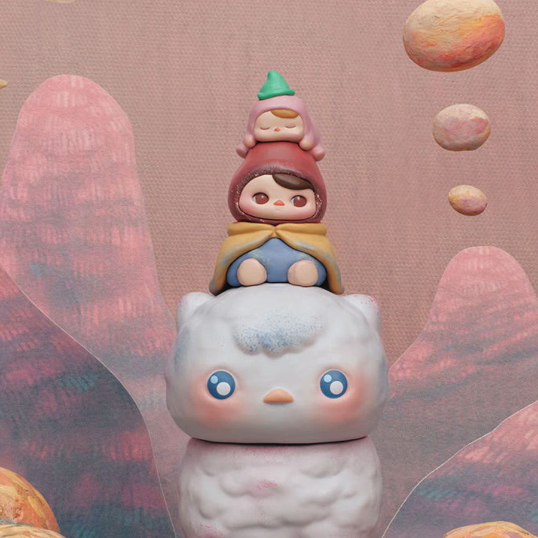
        <h3>PUCKY</h3>
    </div>

    <div class="card" onclick="openModal('Nyota', 'Figure/figure-nyota.png', 'Figure/figure-nyota.png',
        'The Nyota figurine embodies peaceful solitude and happiness in simple moments. Often depicted daydreaming or with beloved cats, her soft tones and delicate details evoke nostalgia and serenity. Each piece invites collectors to slow down, appreciate quiet beauty, and immerse themselves in a world where imagination and reality intertwine.', 
        'Nyota’s world reflects introspection, simplicity, and quiet joy. Her creator infuses warmth, nostalgia, and dreamy aesthetics into each design, capturing life’s fleeting beauty. With soft colours and gentle expressions, Nyota symbolizes tranquillity and self-reflection, reminding collectors to embrace solitude, cherish small joys, and find magic in the ordinary.', 
        'The Nyota collection has had three main releases, with special glow-in-the-dark versions.')">
        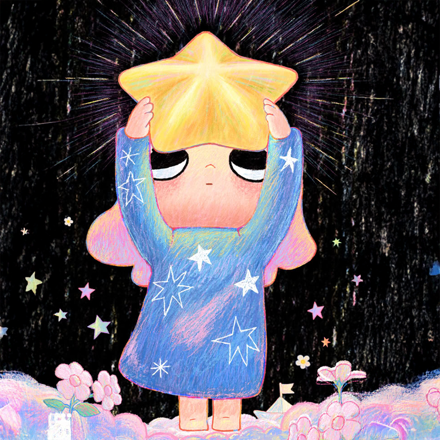  
        <h3>Nyota</h3>
    </div>

    <div class="card" onclick="openModal('HIRONO', 'Figure/figure-hirono.png', 'Artist/hirono artist.png',
        'Hirono embodies hidden emotions, blending introversion with playfulness and resilience. Designed with a worn, distressed look, the figurines symbolize life’s experiences and imperfections. Representing the search for meaning and connection, Hirono invites collectors to embrace nostalgia and vulnerability, reflecting Lang’s vision of human emotion and the beauty in imperfection.', 
        'Lang is a Chinese artist working in painting, sculpture, toys, and animation. His work explores identity and emotions like love, joy, sadness, and fear, capturing them in raw, unfiltered moments. Through his art, he creates a bridge between reality and introspection, offering a space for innocence and imagination in an ever-changing world.', 
        'The Nyota collection has had three main releases, with special glow-in-the-dark versions.')">
        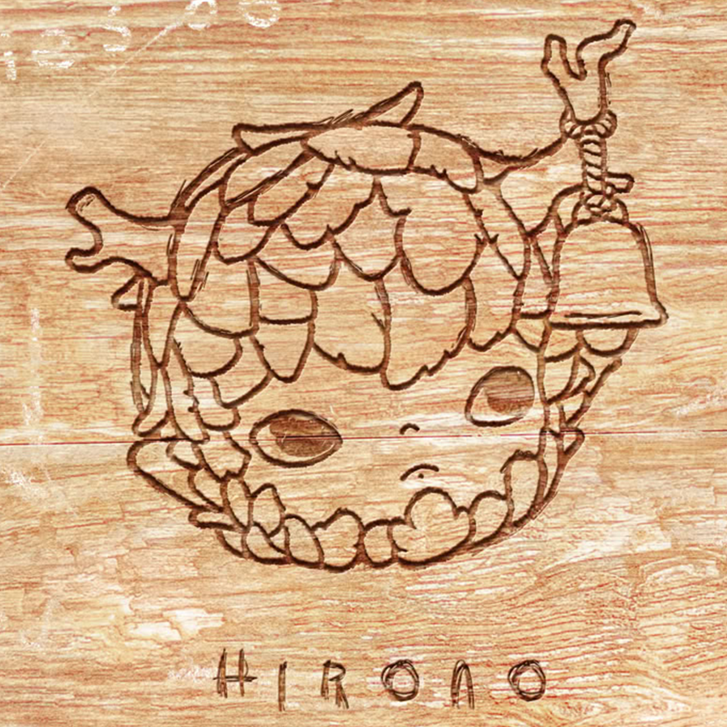  
        <h3>HIRONO</h3>
    </div>

    <div class="card" onclick="openModal('CRYBABY', 'Figure/figure-crybaby.png', 'Artist/crybaby artist.png',
        'Crybaby embodies a range of emotions, from happiness to sorrow, symbolizing the power of expressing feelings. With oversized tears and delicate details, each figure reflects the complexity of human emotions. Designed to be both melancholic and endearing, Crybaby resonates with those who embrace their sensitivity.', 
        'Crybaby was created by Crybaby Molly (Mod-Nisa Srikamdee), the first Thai artist to collaborate with POP MART. Her work reflects deep emotions, inspired by personal experiences of emotional suppression. Through Crybaby, she expresses the beauty of vulnerability, encouraging self-acceptance. Her detailed, heartfelt designs have gained widespread popularity across Asia and beyond, making Crybaby a beloved figure.', 
        'The Nyota collection has had three main releases, with special glow-in-the-dark versions.')">
        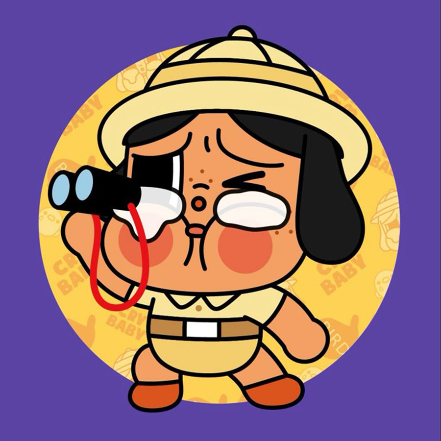  
        <h3>CRYBABY</h3>
    </div>

    <div class="card" onclick="openModal('PINO JELLY', 'Figure/figure-pinojelly.png', 'Artist/pinojelly artist.png',
        'PINO JELLY is a lively pop star from a world of sweets, bringing joy through music and fun. Transformed into a candy companion, he spreads warmth and happiness. With vibrant colours and a playful spirit, each figure captures his energetic charm, reminding collectors to embrace fun and positivity.', 
        'Yumi, an animation graduate from the Communication University of China, blends her love for cartoons and candy into whimsical character designs. Overcoming challenges, she turned her passion into reality, creating playful, nostalgic figures. Through her work, she inspires others to embrace creativity, joy, and the sweetness in life.', 
        'The Nyota collection has had three main releases, with special glow-in-the-dark versions.')">
        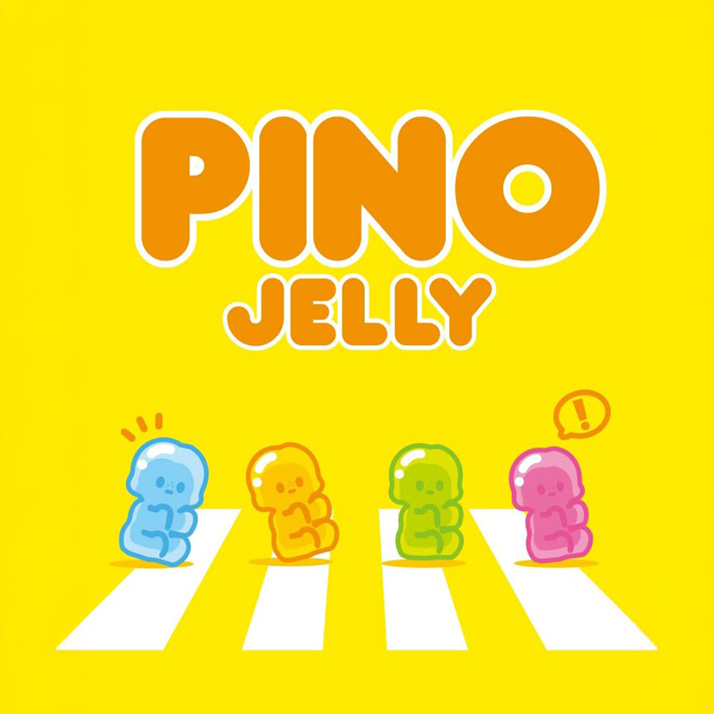  
        <h3>PINO JELLY</h3>
    </div>

    <div class="card" onclick="openModal('SKULLPANDA', 'Figure/figure-skullpanda.png', 'Artist/skullpanda artist.png',
        'SKULLPANDA is a mysterious traveler exploring different worlds and identities. With its signature astronaut helmet, spherical braids, and unique makeup, it blends gothic allure with futuristic aesthetics. Defying conventional cuteness, SKULLPANDA invites fans to embrace individuality, mystery, and self-expression through its ever-evolving, dreamlike existence.', 
        'DXIONG MIAO, a Chinese artist and GC concept designer, founded BEIZHAI in 2014 and created SKULLPANDA in 2018. Known for her bold, edgy aesthetic, her work challenges traditional collectibles. Since joining POP MART in 2020, SKULLPANDA has gained worldwide popularity, inspiring cosplayers and collectors with its dark yet alluring style.', 
        'The Nyota collection has had three main releases, with special glow-in-the-dark versions.')">
        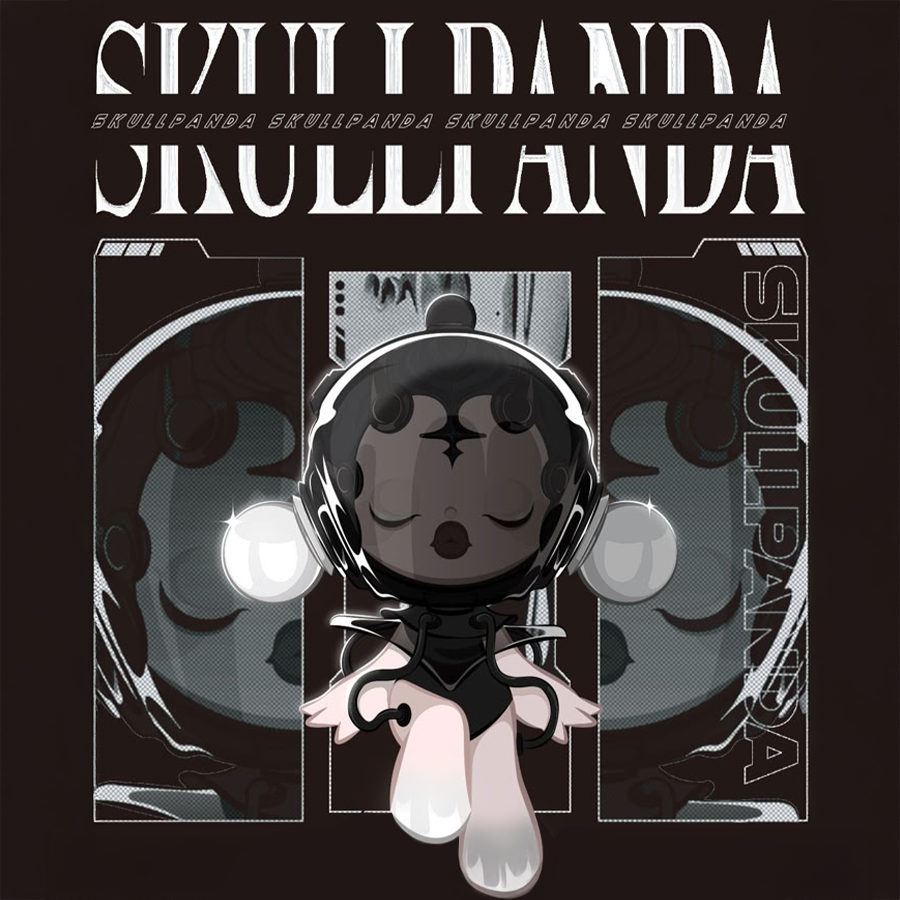  
        <h3>SKULLPANDA</h3>
    </div>

    <div class="card" onclick="openModal('Peach Riot', 'Figure/figure-peachriot.png', 'Artist/peachriot artist.png',
        'Peach Riot celebrates the riot girl band movement and 90s grunge, inspired by rebellious energy and anime influences. The collection blends nostalgia with modern style and features Poppy, Gigi, and Frankie. Each figure embodies youth, music, and individuality, creating a bold, expressive tribute to creative freedom and self-expression.', 
        'Libby Frame is a Los Angeles-based artist specializing in character design and storytelling. With a background in Illustration Design and Film Studies, she draws inspiration from music, film, and pop culture. Passionate about bold, expressive characters, she brings attitude and charm to her work, crafting narratives that blend nostalgia with modern creativity.', 
        'The Nyota collection has had three main releases, with special glow-in-the-dark versions.')">
        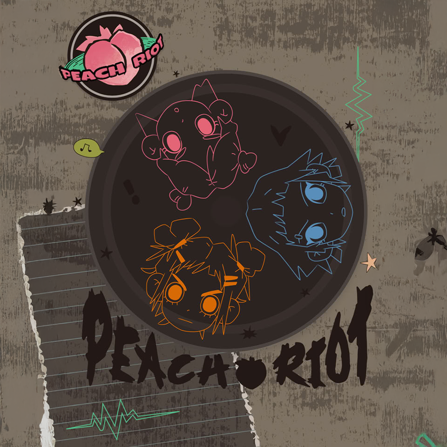
        <h3>Peach Riot</h3>
    </div>

    <div class="card" onclick="openModal('Sweet Bean', 'Figure/figure-sweetbean.png', 'Artist/sweetbean artist.png',
        'Sweet Bean is an adorable toddler full of curiosity and energy. Always exploring and discovering new things, this cheerful little one finds joy in life’s simplest moments. Designed with soft, rounded features and expressive details, Sweet Beanembodies childhood wonder, making it a heartwarming and playful addition to any collection.', 
        'Ling, a designer at POP MART’s Pop Design Center (PDC), has been creating original characters since 2015. With a youthful spirit and love for life, she infuses her designs with warmth and playfulness. Her most beloved creation, Sweet Bean, captures the innocence and curiosity of childhood, bringing joy and nostalgia to collectors worldwide.', 
        'The Nyota collection has had three main releases, with special glow-in-the-dark versions.')">
        
        <h3>Sweet Bean</h3>
    </div>

    <div class="card" onclick="openModal('Chaka', 'Figure/figure-chaka.png', 'Artist/chaka artist.png',
        'CHAKA is a glowing, ever-changing character named after the spark of a match. Absorbing and reflecting light, CHAKA transforms into different colours and forms, symbolizing adaptability and discovery. With a comforting glow and playful spirit, CHAKA invites collectors into a world of wonder and boundless possibilities.', 
        'Hanna Li is an illustrator and designer known for her whimsical, light-inspired creations. Her character CHAKA started as an illustration before becoming a beloved collectible, joining POP MART in 2024. With a passion for storytelling and transformation, Hanna crafts dreamlike designs that evoke warmth, curiosity, and endless imagination.', 
        'The Nyota collection has had three main releases, with special glow-in-the-dark versions.')">
        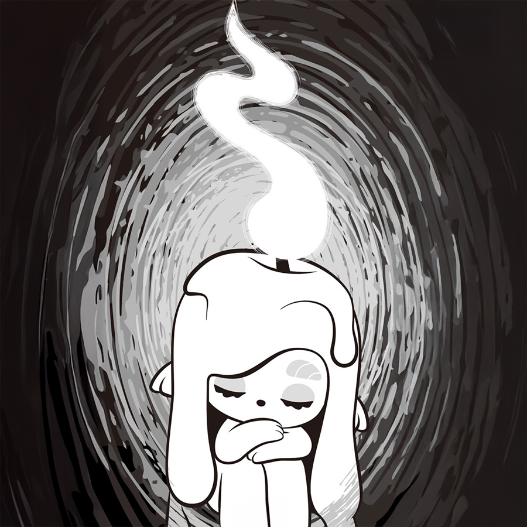
        <h3>Chaka</h3>
    </div>

    <div class="card" onclick="openModal('DIMOO', 'Figure/figure-dimoo.png', 'Artist/dimoo artist.png',
        'Dimoo is a curious boy on an endless journey of discovery, guided by Baby Cloud, which changes shape with his emotions. With soft pastel tones and expressive details, Dimoo embodies innocence, dreams, and companionship, inviting collectors to embrace nostalgia, imagination, and the beauty of emotional expression.', 
        'Ayan Deng is an artist, illustrator, and toy designer known for whimsical creations that blend fantasy and emotion. Her delicate, dreamy style brings imaginative worlds to life, evoking innocence, curiosity, and heartfelt connections. Through Dimoo, she invites collectors into a world of storytelling, where emotions and fleeting moments are beautifully captured.', 
        'The Nyota collection has had three main releases, with special glow-in-the-dark versions.')">
        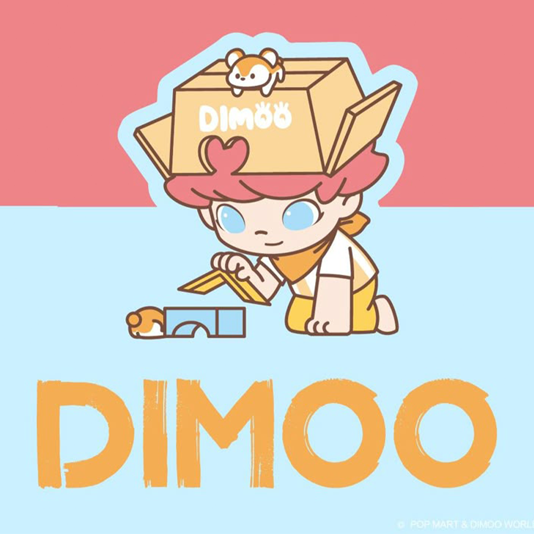 
        <h3>DIMOO</h3>
    </div>

    <div class="card" onclick="openModal('KUBO', 'Figure/figure-kubo.png', 'Artist/kubo artist.png',
        'KUBO is a stylish, confident character with a buzz cut and a cool, blank expression that hides his adventurous spirit. Thriving in urban life, he embraces self-expression and adaptability. Whether a warrior, coder, or trendsetter, KUBO evolves across series, embodying independence, boldness, and the mantra -Own Your Truth-.', 
        'Bao Bao is an illustrator and art toy designer who blends his love for animals, cooking, and self-expression into his work. Passionate about individuality and resilience, he creates characters that inspire authenticity and belonging. Through KUBO, he encourages people to embrace their passions and stay true to themselves, even in challenging times.', 
        'The Nyota collection has had three main releases, with special glow-in-the-dark versions.')">
        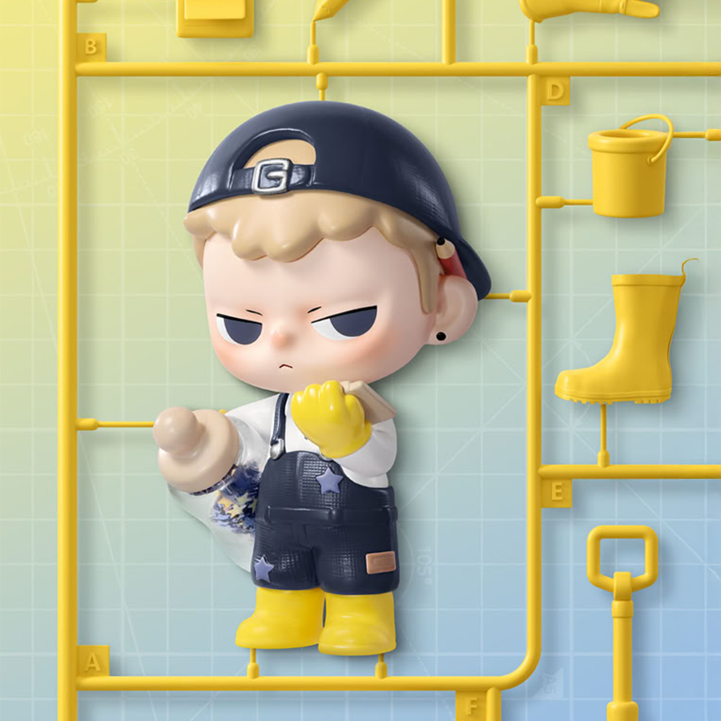 
        <h3>KUBO</h3>
    </div>

    <div class="card" onclick="openModal('MOLLY', 'Figure/figure-molly.png', 'Artist/molly artist.png',
        'Molly is a playful, pouty character with emerald-green eyes and a confident personality. Originally a tiny painter, she has transformed into various personas, from travelers to musicians. With her ever-changing outfits and expressive charm, Molly remains an iconic and beloved figure among collectors.', 
        'Kenny Wong is a Hong Kong artist and toy designer best known for creating Molly. Inspired by childhood nostalgia, he introduced Molly in 2006, crafting a character full of charm and individuality. Since partnering with POP MART in 2016, Molly has become a global favorite, cementing Wong’s influence in the art toy industry.', 
        'The Nyota collection has had three main releases, with special glow-in-the-dark versions.')">
        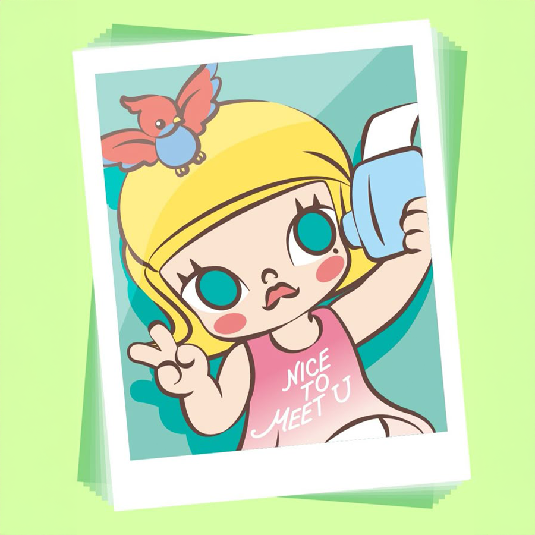
        <h3>MOLLY</h3>
    </div>

    <div class="card" onclick="openModal('The Monsters/Labubu', 'Figure/figure-labubu.png', 'Artist/labubu artist.png',
        'Labubu is a mischievous, wide-eyed creature with sharp teeth and an impish grin. Part of The Monsters series, it embodies adventure, humour, and fantasy. With expressive features and furry textures, Labubu enchants collectors, evolving through different moods, outfits, and themes in Kasing Lung’s magical world.', 
        'Kasing Lung is a Hong Kong-based artist and illustrator known for blending fantasy and storytelling into whimsical characters. His distinctive style merges innocence with mystery, captivating collectors worldwide. Best known for Labubu, his creations transport fans into a world of nostalgia and curiosity. Partnering with POP MART and How2work, he continues to expand his imaginative universe.', 
        'The Nyota collection has had three main releases, with special glow-in-the-dark versions.')">
        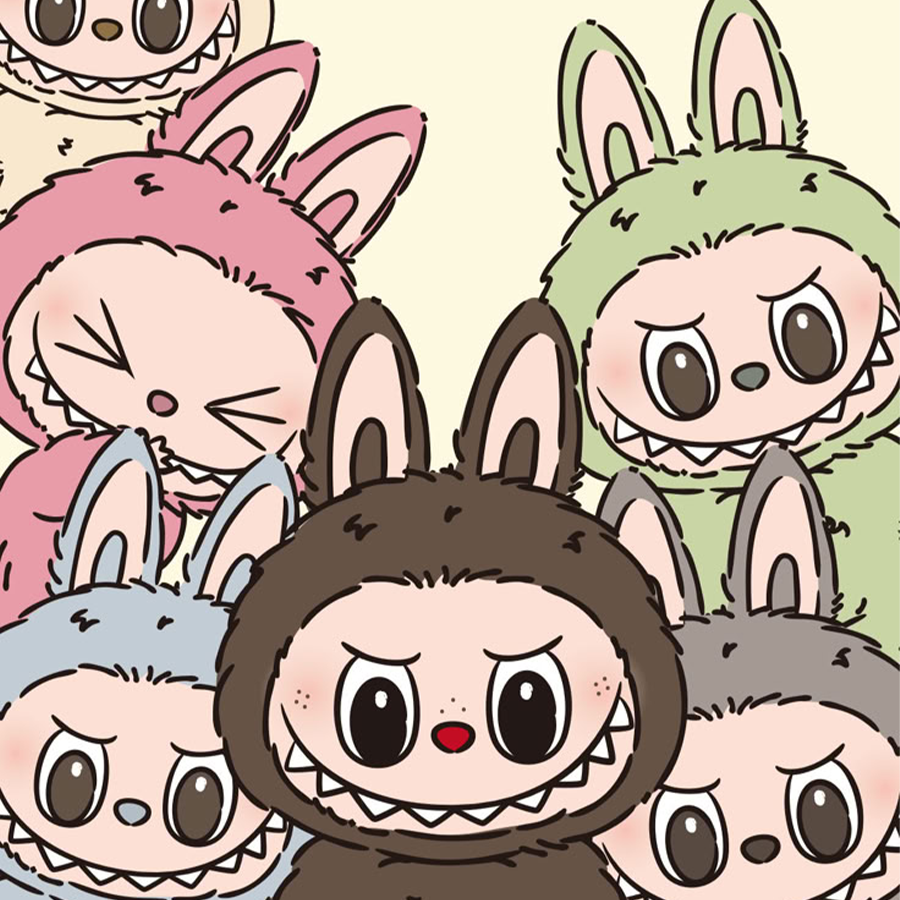
        <h3>The Monsters (Labubu)</h3>
    </div>

    <div class="card" onclick="openModal('Azura', 'Figure/figure-azura.png', 'Artist/azura artist.png',
        'Azura is an introspective being from a crystalline planet where tears hold life-giving energy. She collects and transforms them into a magical force, symbolizing strength in vulnerability. With soft, ethereal details, Azura offers comfort and invites collectors to embrace both joy and melancholy in their emotional journey.', 
        'Two Clouds, a designer at POP MART’s Design Center, is the creator of Azura and Oipippi. Her work reflects softness, emotion, and quiet strength, exploring self-acceptance through delicate, dreamlike aesthetics. She transforms vulnerability into powerful narratives, reminding collectors that every emotion, even sadness, has beauty and value.', 
        'The Nyota collection has had three main releases, with special glow-in-the-dark versions.')">
         
        <h3>Azura</h3>
    </div>

    <div class="card" onclick="openModal('LuLu the Piggy', 'Figure/figure-lulu.png', 'Figure/figure-lulu.png',
        'LuLu The Piggy is a mischievous elf who escaped from a can of luncheon meat to explore the world. With its pink colour, silly expressions, and playful poses, LuLu embodies curiosity and adventure, bringing humour and charm to collectors who love spontaneity and fun.', 
        'Cici is an independent handcraft artist and the creator of LuLu The Piggy and CiCi Story. Starting with felted wool in 2014, she transitioned to designer toys, launching LuLu The Piggy in 2019. Her whimsical, playful designs blend humour and curiosity, capturing themes of adventure, freedom, and joyful rebellion, earning a devoted fanbase.', 
        'The Nyota collection has had three main releases, with special glow-in-the-dark versions.')">
         
        <h3>LuLu the Piggy</h3>
    </div>

    <div class="card" onclick="openModal('Azukisan', 'Figure/figure-azukisan.png', 'Figure/figure-azukisan.png',
        'Azukisan is a lovable cat with playful, clueless expressions that capture everyday feline adventures. From napping to exploring, each figure in the Daily Life Blind Box series highlights its irresistible charm. A favourite among collectors, Azukisan continues to delight with new designs and heartwarming poses.', 
        'Nobeko is the creator of Azukisan, an expressive feline loved by cat enthusiasts worldwide. Inspired by the innocence and quirks of cats, she designed Azukisan to embody curiosity and charm. The Azukisan’s Daily Life Blind Box series quickly gained popularity beyond China and Japan, bringing warmth and joy to collectors across the globe.', 
        'The Nyota collection has had three main releases, with special glow-in-the-dark versions.')">
        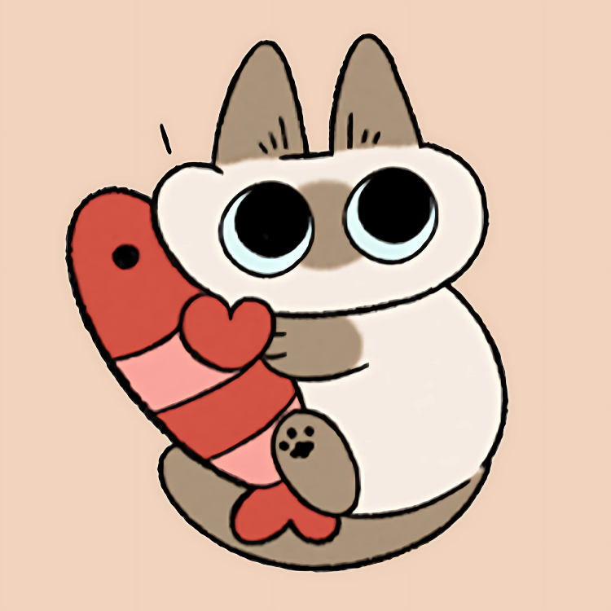 
        <h3>Azukisan</h3>
    </div>

    <div class="card" onclick="openModal('Wuhuang & Bazahey', 'Figure/figure-wb.png', 'Figure/figure-wb.png',
        'Wuhuang Wanshui’s creation is a regal yet grumpy cat constantly surrounded by what it sees as foolishness. With expressive eyes and a reluctant affection for its companions, each figure captures a cat’s inner struggle between aloofness and warmth, making it a charming collectible for cat lovers.', 
        'Wuhuang Wanshui is a young cartoonist who draws inspiration from his pets, humorously capturing the quirks of feline behaviour. His storytelling blends wit and heart, portraying the contrast between a cat’s dignified pride and the chaos of its human and canine companions. His relatable, expressive style resonates with pet lovers everywhere.', 
        'The Nyota collection has had three main releases, with special glow-in-the-dark versions.')">
         
        <h3>Wuhuang & Bazahey</h3>
    </div>

    <div class="card" onclick="openModal('Smiski', 'Figure/figure-smiski.png', 'Figure/figure-smiski.png',
        'Smiski are small, luminescent figures that love hiding in corners and small spaces. Each figure has a unique pose and mysteriously glows in the dark. They are available in various series, each featuring different themes and poses. ', 
        'Smiski figures are created by Dreams Inc., a Japanese company known for designing whimsical and mysterious characters. These glow-in-the-dark figurines are designed to hide in small spaces, bringing a sense of curiosity and surprise to everyday life.', 
        'The Nyota collection has had three main releases, with special glow-in-the-dark versions.')">
        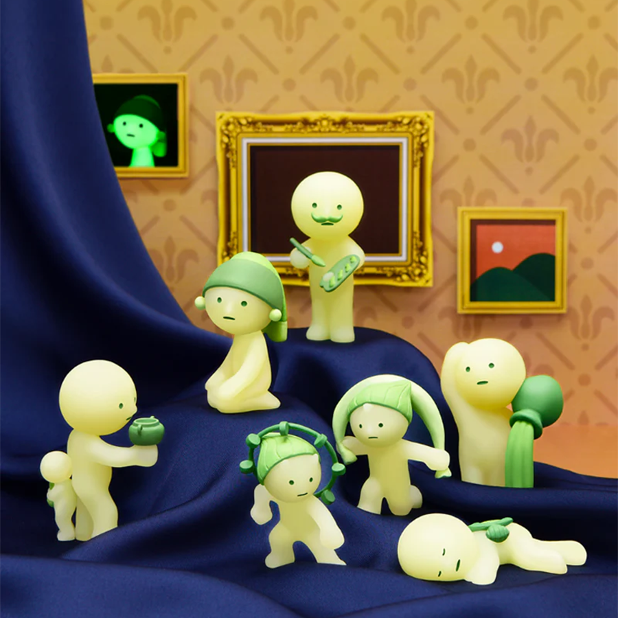
        <h3>Smiski</h3>
    </div>

</div>
<!-- END OF LIST -->